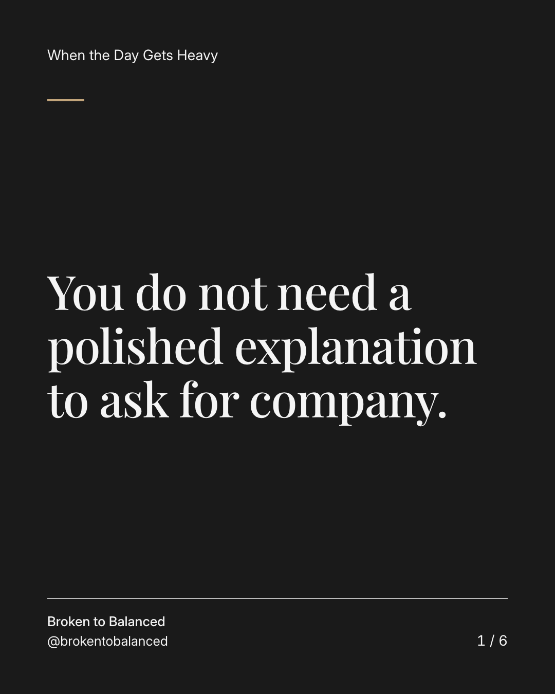
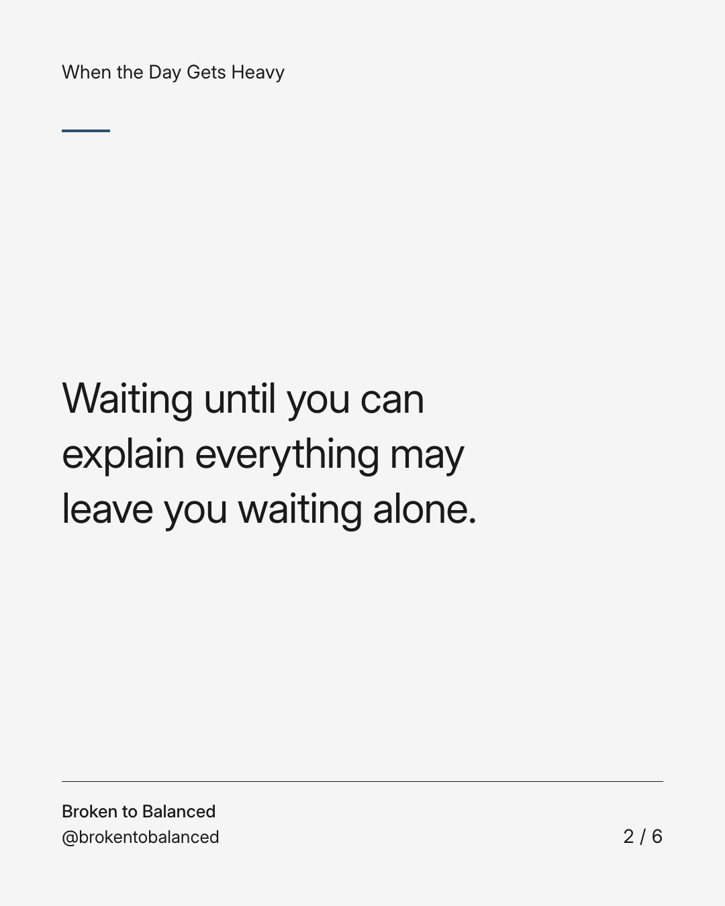
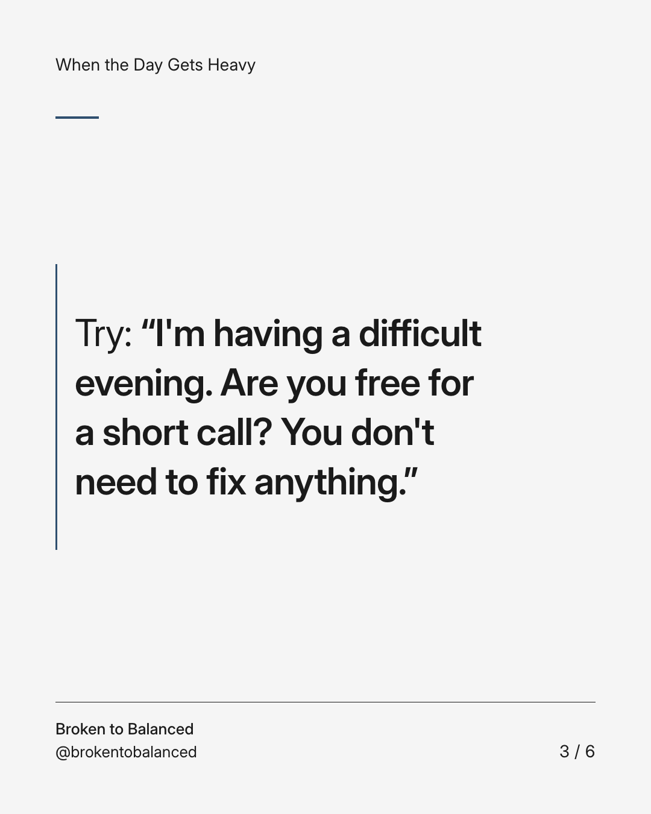
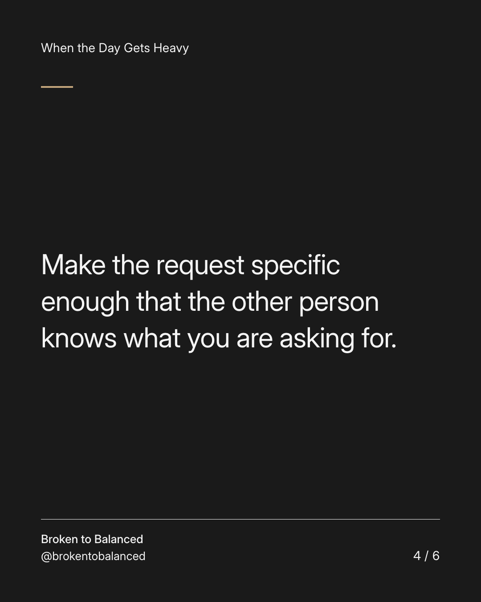
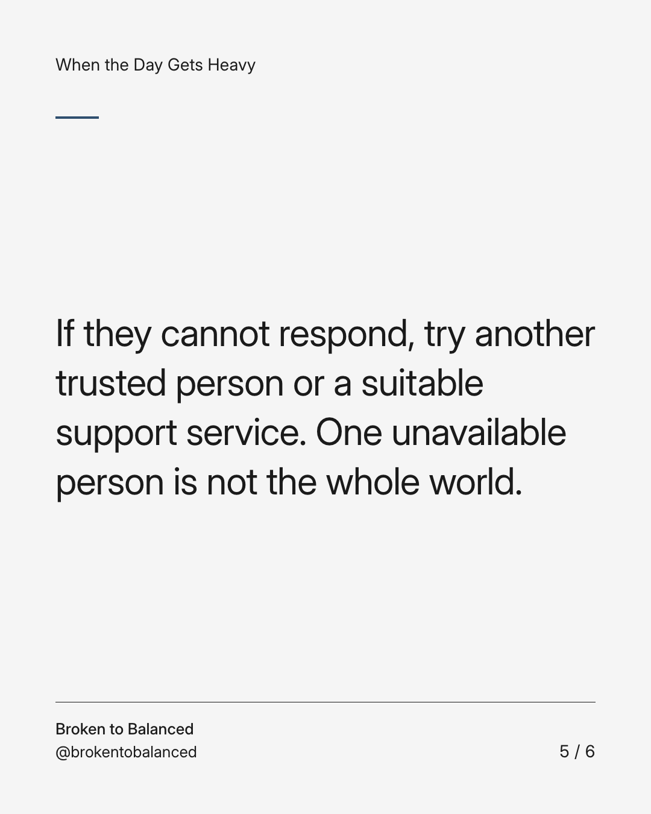
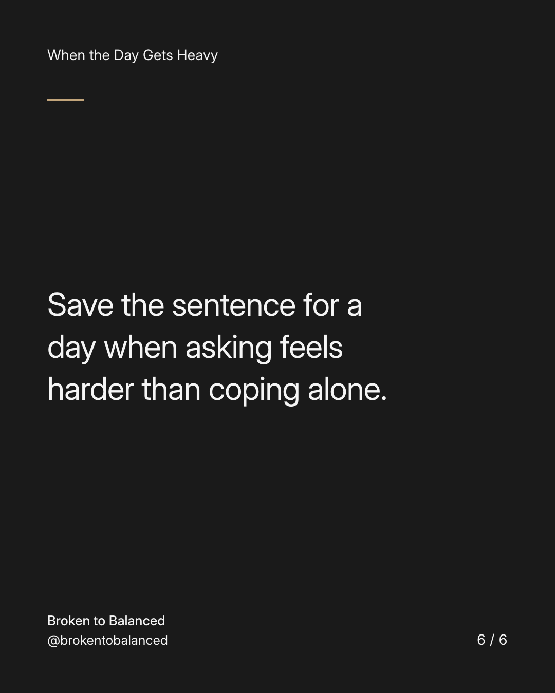

Exact text and accessibility text
You do not need a polished explanation to ask for company.
Slide 1 of 6. You do not need a polished explanation to ask for company.


Exact text and accessibility text
Waiting until you can explain everything may leave you waiting alone.
Slide 2 of 6. Waiting until you can explain everything may leave you waiting alone.


Exact text and accessibility text
Try: “I'm having a difficult evening. Are you free for a short call? You don't need to fix anything.”
Slide 3 of 6. Try: “I'm having a difficult evening. Are you free for a short call? You don't need to fix anything.”


Exact text and accessibility text
Make the request specific enough that the other person knows what you are asking for.
Slide 4 of 6. Make the request specific enough that the other person knows what you are asking for.


Exact text and accessibility text
If they cannot respond, try another trusted person or a suitable support service. One unavailable person is not the whole world.
Slide 5 of 6. If they cannot respond, try another trusted person or a suitable support service. One unavailable person is not the whole world.


Exact text and accessibility text
Save the sentence for a day when asking feels harder than coping alone.
Slide 6 of 6. Save the sentence for a day when asking feels harder than coping alone.
Exact caption
Plain-text fallback: select and copy the caption.